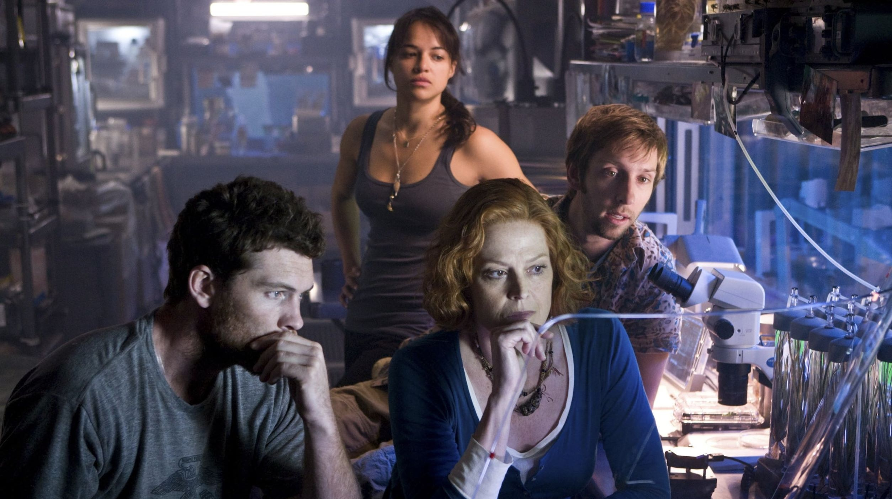
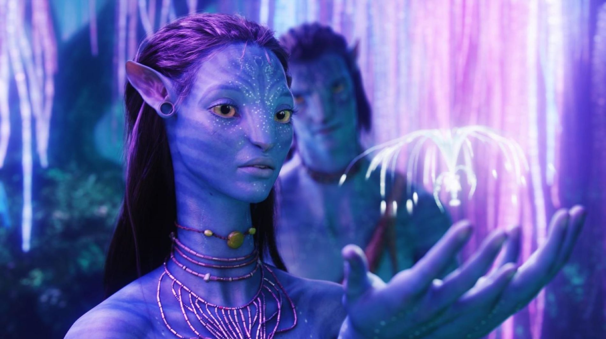

Кадры из фильма
 
Трейлер
Аннотация
Бывший морпех Джейк Салли прикован к инвалидному креслу. Несмотря на немощное тело, Джейк в душе по-прежнему остается воином. Он получает задание совершить путешествие в несколько световых лет к базе землян на планете Пандора, где корпорации добывают редкий минерал, имеющий огромное значение для выхода Земли из энергетического кризиса.
Год производства: 2009г
Страна: США
Жанр: фантастика, боевик, драма, приключения
Слоган: "Это новый мир"
Режиссёр: Джеймс Кэмерон
Возраст: 12+